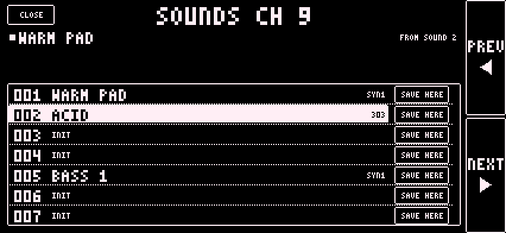
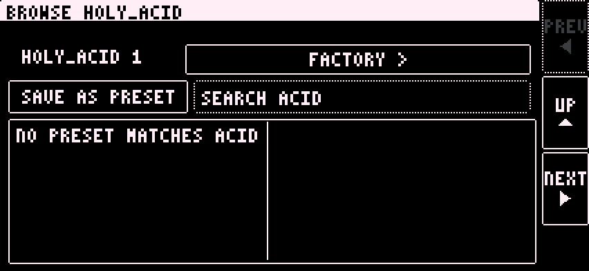

Each project has a shared sound bank of 127 slots. All four parts use it.
Load a slot by Program Change from the Digitakt. Program Change 0 loads slot 1. Program Change 126 loads slot 127.
Or tap it in the app. On a synth page, the bar at the bottom has SOUNDS nnn, SAVE, BROWSE and RETURN.
Each part holds one Sound number from 1 to 127. A project has one Sound bank.

A new project starts with four Sounds: 1 SYNTHONE, 2 FM, 3 303, 4 GRANULAR. The rest are empty. An empty row shows INIT and loads an INIT sound on the part's current engine.
Save into a row:
Rename: tap the name under CLOSE. Type on the keyboard. Press DONE. A rename reaches the Sound bank only when you save.
A dot beside the name means the working sound has changed since it was loaded. A Sound that cannot be read shows SOUND N COULD NOT BE READ.
Presets are per engine and shared by all projects. They are factory presets plus your own.

Presets and Sound bank entries are separate. SAVE AS PRESET writes a Preset. SAVE and SAVE HERE write the Sound bank.
Move any knob on the synth page. A dot beside the name shows the working sound has changed. Your changes stay in the part until you save.
Or press SAVE HERE on a row in SOUNDS to save into that row. To keep it as a preset, use SAVE AS PRESET in BROWSE.